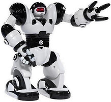
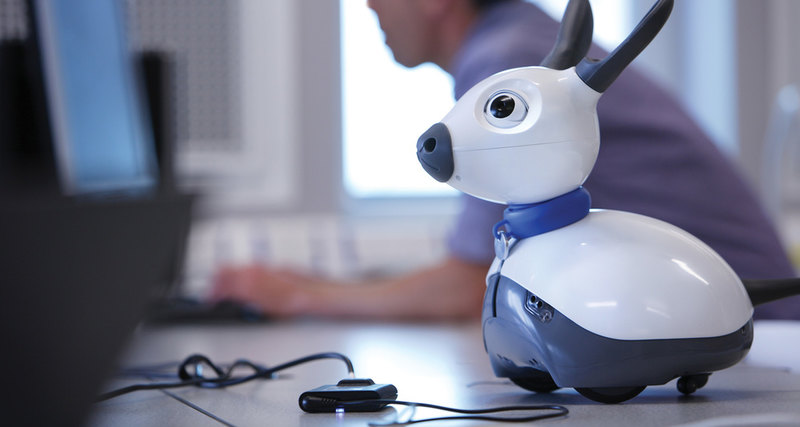
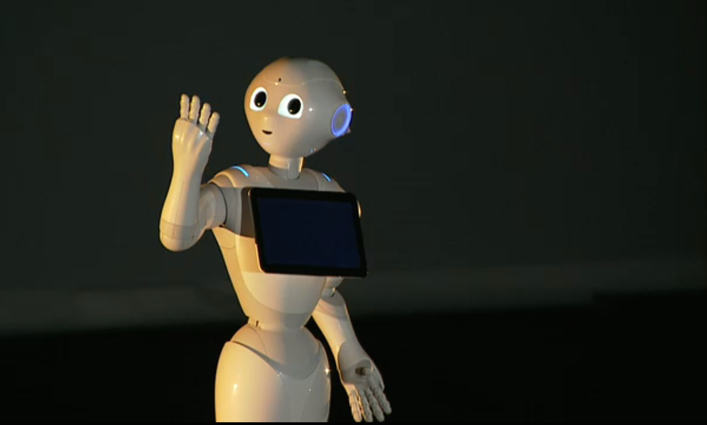
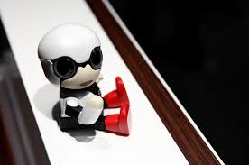

Приклади

Роботи-іграшки
Одним з перших прикладів вдалої масової промислової реалізації роботів-іграшок стала собачка AIBO корпорації Sony. У серії розвиваючих іграшок LEGO є набір конструктора LEGO Mindstorms для створення програмованого робота. Так само існують такі роботи-іграшки як крокуючий робот Robosapienвід компанії WowWee і робот — динозавр Pleo.

Соціальні роботи
Соціальний робот - робот, здатний в автономному або напівавтономному режимі взаємодіяти і спілкуватися з людьми в громадських місцях.Соціальний робот для реабілітації - пристрій телеприсутності, призначений для задоволення соціальних потреб (наприклад, потреби в спілкуванні або потреби дистанційно (віддалено) працювати для маломобільних громадян, інвалідів).Соціальні роботи для реабілітації - елементи соціальної робототехніки, покликаної залучати людей з обмеженими можливостями у суспільне життя (робота, навчання, спілкування, розваги).

Персональний робот
Тип роботів, які на відміну від промислових роботів будуть компактні, дешеві та прості у використанні. Пряма аналогія з поняттям персональний комп'ютер.Основна перешкода, що стоїть на шляху перетворення людиноподібного робота подібного до ASIMO в універсального слугу, - недосконалість програмного забезпечення. Незважаючи на недавні досягнення в областях комп'ютерного зору, обробки природної мови, мета все ще далека.

Робот-компаньйон
Робот буде стежити за бабусею, як собака, розповідати їй жарти, розмовляти з нею про її улюблених телешоу і читати її улюблені фрагменти біблії », - обіцяє Мартін Спенсер (Martin Spencer), президент американської компанії GeckoSystems. Ця фірма 16 листопада оголосила про початок «перших в світі випробувань мобільного сервісного робота (Mobile Service Robot - MSR) в будинках людей похилого віку».Свій перший закінчений продукт - CareBot - компанія представила в кінці квітня, і ми розповідали про це. Нагадаємо, що брудну домашню роботу компаньйон на себе не бере, вважаючи її обов'язком побутової техніки: пральної і посудомийної машин, пилососа, грубки, сушарки і так далі.CareBot ж, як то кажуть, доглядає за літнім підопічним, служачи йому співрозмовником, органайзером, розважальним центром, системою безпеки і засобом комунікації. Наприклад, робот може відтворити анекдот або пісню, нагадати прийняти ліки, влаштувати відеоконференцію з родичами, в разі чого викликати медиків, поліцію, пожежників, опікунів.